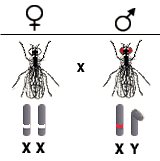
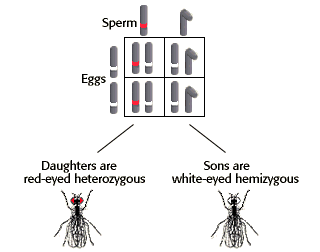

Sex-Linked Inheritance Problem Set
Problem 1: Crossing a white-eyed female and red-eyed male fly
Tutorial to help answer the question
| In a cross between a white-eyed female fruit fly and red-eyed male, what percent of the female offspring will have white eyes? (White eyes are X-linked, recessive.) |
Tutorial
Genotypes and phenotypes of parents
|
The female parent must be homozygous because she has the recessive white-eyed phonotype. The male parent is hemizygous, red-eyed. |
 |
Genotypes and phenotypes of offspring
|
The sperm will contain either a normal X chromosome or a Y chromosome. |
 |
Summary
|
We use a Punnett Square to predict the outcome of this cross Female offspring receive an X chromosome from both the sperm and egg. All females receive the dominant, red-eyed allele from their fathers and the recessive, white-eyed allele from their mothers. (If necessary see the tutorial for problem #1 of the monohybrid cross problem set for a review of how to set up a Punnett Square.) |


University of Arizona
Updated: July 15, 1999
Contact the Development Team
http://biology.arizona.edu
All contents copyright © 1996-99. All rights reserved.